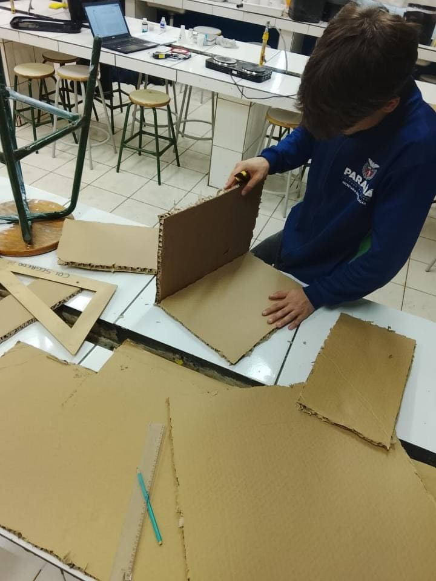
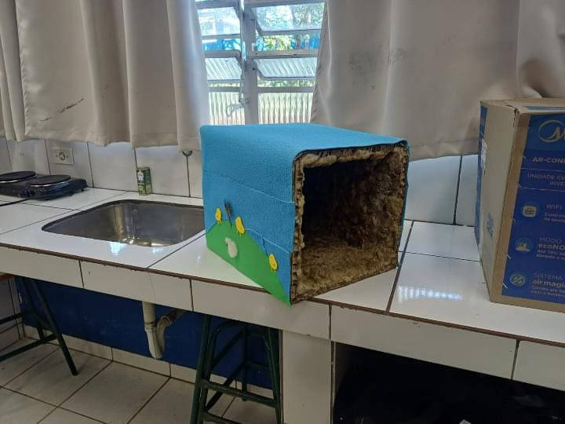
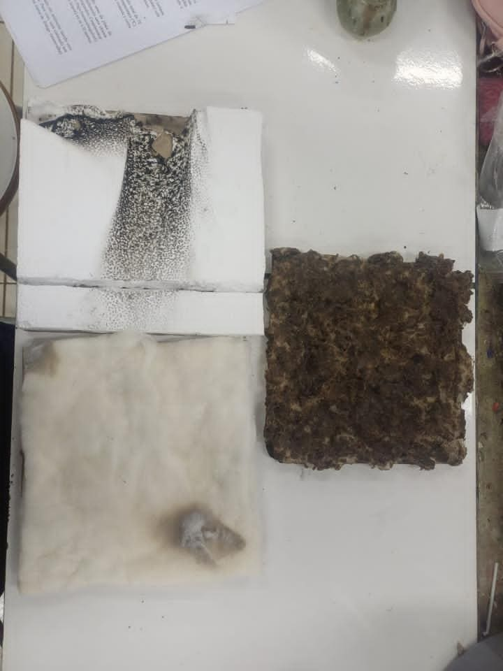
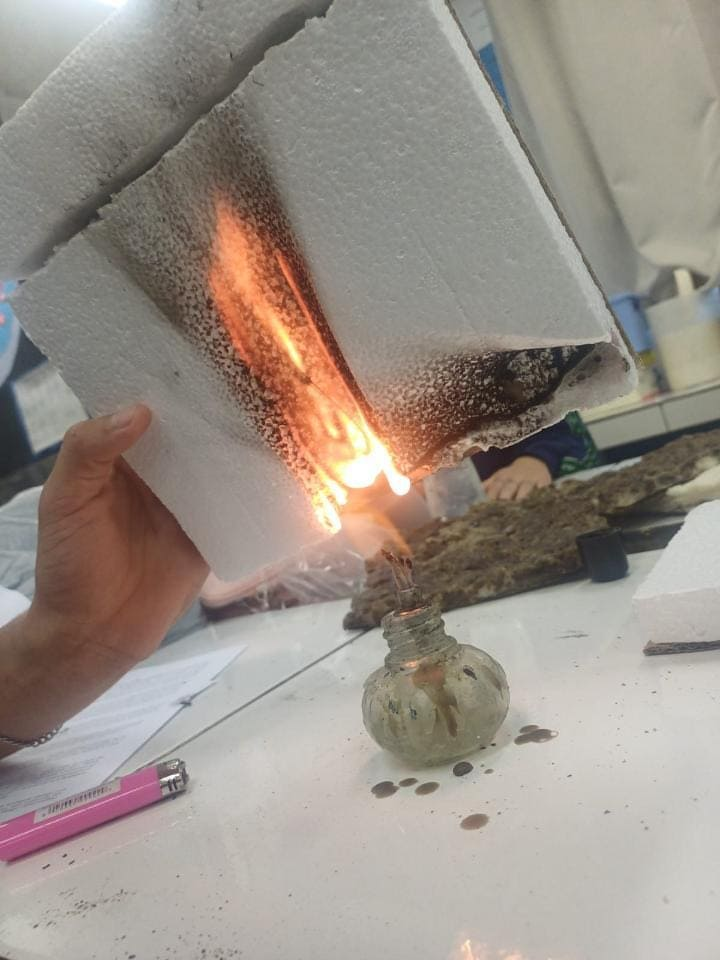
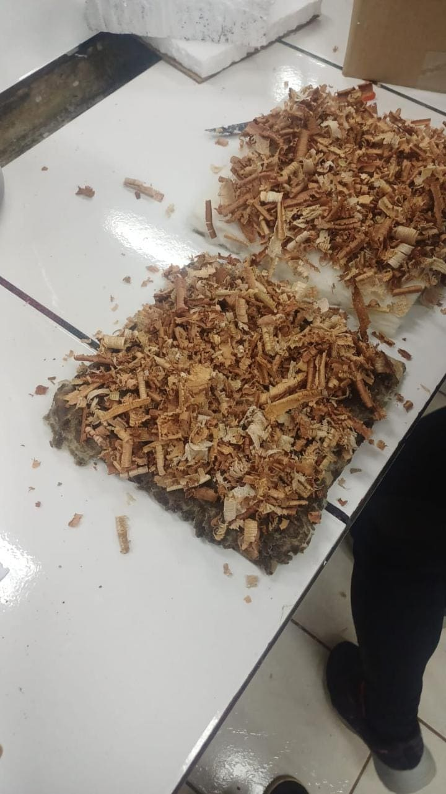
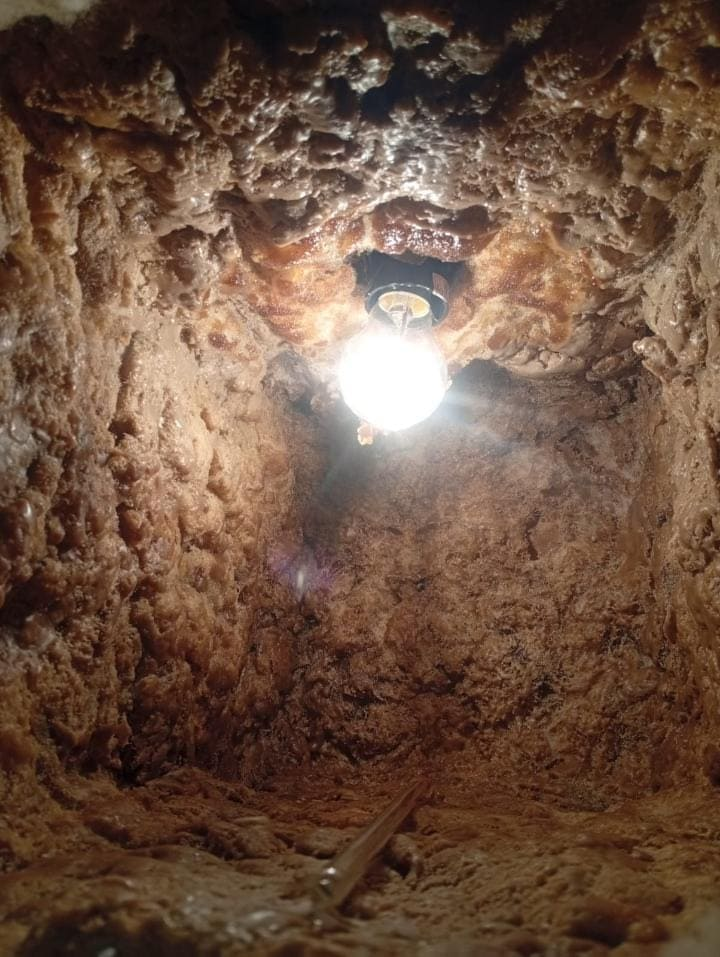
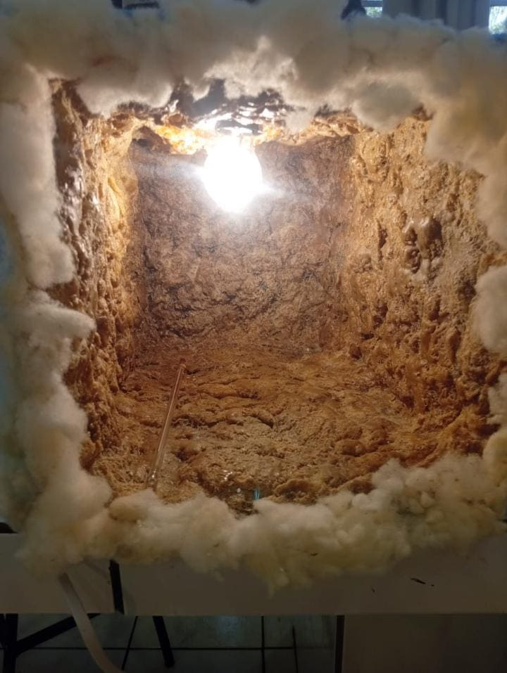

Eco Isolador de Pintinhos
Desenvolvimento sustentável de placas isolantes térmicas com materiais reutilizáveis e biodegradáveis. Uma alternativa eficiente de baixo custo a partir de papelão reciclado, lã de ovelha e cera de abelha.
Apresentação do Projeto
O projeto Eco Isolador de Pintinhos foi desenvolvido com o propósito de criar uma alternativa sustentável, eficiente e de baixo custo para o aquecimento e isolamento térmico na criação de pintinhos nos primeiros dias de vida.
Utilizando materiais reutilizáveis como o papelão e componentes naturais como a lã de ovelha e a cera de abelha, o projeto busca substituir isolantes sintéticos tradicionais (como o isopor) por soluções biodegradáveis que oferecem excelente retenção do calor, garantindo a proteção e o bem-estar dos animais.
Sustentabilidade
Utiliza papelão reaproveitado, lã de ovelha e cera de abelha, reduzindo a pegada ecológica e evitando o descarte em aterros.
Eficiência Térmica
A lã de ovelha e a cera atuam de forma sinérgica conservando o calor interno sem quedas bruscas de temperatura.
Baixo Custo
Alternativa extremamente acessível para avicultores familiares e pequenos produtores rurais em regiões frias.
Segurança Antifogo
Ensaios práticos comprovam que a lã não propaga chamas e não produz gotículas plásticas incandescentes perigosas.
Galeria de Fotografias Reais
Clique em qualquer fotografia para ampliar no modo de visualização em detalhes (Lightbox).

Montagem e Corte de Papelão
Aluno no laboratório efetuando a medição e corte das placas reutilizadas.

Estrutura Finalizada
Casinha decorada com EVA azul, desenhos de pintinhos e ovelhas.

Teste de Inflamabilidade
Ensaio com lamparina a incidir diretamente sobre a placa de isopor.

Amostras Comparativas Pós-Fogo
Placas de isopor queimado, lã com cera de abelha e fibra de lã.

Simulação de Umidade com Serradura
Placas cobertas com serragem e água para verificação de fungos.

Medição Térmica Interna
Visão interior com termômetro de medição e lâmpada acesa.

Revestimento Interno
Vista frontal da câmara isolante revestida com lã de ovelha e cera.
Relato do Processo Científico
Acompanhe a entrevista gravada no laboratório com os alunos autores, detalhando os desafios no controle de temperatura, o combate à umidade e a substituição viável do isopor.
Diário de Bordo Integral
Na quinta-feira dia 06/08, iniciamos com o preparo da lã. Primeiramente, realizamos a limpeza e a preparação do material, retirando a casca e as partes que não seriam utilizadas. Essa etapa foi feita com bastante cuidado para evitar que a lã fosse danificada durante o processo. Em seguida, fizemos a separação e organização da lã, deixando o material mais limpo e adequado para continuar o trabalho. Também observamos suas características e verificamos se havia alguma parte que precisava ser retirada ou ajustada. Esse procedimento foi importante para garantir uma melhor qualidade do material e facilitar as próximas etapas da produção. Ao final do processo, deixamos a lã preparada e organizada para dar continuidade ao projeto nos próximos dias.
Na quinta-feira, dia 13/08, começamos a construção da casinha que faria parte do nosso projeto. Para isso, utilizamos papelão, pois decidimos trabalhar com materiais reutilizáveis, aproveitando materiais que pudessem ser descartados. Primeiro, separamos os pedaços de papelão e começamos a medir e cortar cada um de acordo com o tamanho planejado para a casinha.
Na quinta-feira 20/08, continuamos com mais uma etapa do nosso projeto. Primeiro, começamos a preparar a cola que será utilizada para fixar a lã de ovelha nas placas de papelão. Depois de preparar a cola, começamos a colar cuidadosamente a lã sobre as placas, procurando distribuí-la de maneira uniforme e cobrir toda a superfície. Em seguida, demos continuidade ao processo aplicando a cera de abelha sobre a lã. Essa etapa foi realizada com cuidado para que a cera ficasse bem espalhada e aderisse corretamente à lã. Essa atividade foi importante para dar continuidade ao desenvolvimento do nosso projeto, além de nos permitir conhecer melhor os materiais utilizados e entender como eles poderiam contribuir para a construção da casinha.
No dia 27/08, começamos a montar a estrutura da nossa casinha. Primeiro, juntamos as placas de papelão com a lã para prender e formar as partes da casinha. Depois que todas as partes foram unidas e a estrutura ficou pronta, começamos a enfeitar e decorar. Para esta etapa, utilizamos EVA, cola quente e um pouco de lã de ovelha, criando os detalhes da casinha e deixando-a mais bonita e colorida. Trabalhamos para decidir onde colocar cada parte da decoração, dando forma ao que tínhamos planejado para o projeto. Essa etapa foi importante para dar uma aparência mais próxima do resultado que imaginávamos.
No dia 03/09 na quinta-feira, terminamos a decoração da casinha e deixamos todos os detalhes preparados para dar continuidade ao projeto. Depois disso, começamos a produzir os protótipos que serão utilizados para representar as ideias do nosso trabalho. Ao todo, fizemos seis protótipos: dois utilizando placas de papelão com fibra de lã, dois utilizando placas de papelão com lã e mel [cera], e outros dois feitos com placas de papelão com isopor.
No dia 10/09, fizemos a finalização dos protótipos que havíamos começado anteriormente. Nessa etapa, terminamos os detalhes que ainda faltavam e fizemos os últimos ajustes para que todos ficassem bem estruturados, firmes e apresentáveis. Também verificamos se os materiais estavam bem fixados e se os protótipos estavam de acordo com o que havíamos planejado durante o desenvolvimento do nosso projeto.
No dia 17/09, iniciamos os primeiros testes dos protótipos desenvolvidos para o projeto. O objetivo foi avaliar características como inflamabilidade, resistência e o comportamento dos materiais quando expostos ao fogo.
Após os testes de inflamabilidade, espalhamos serragem de madeira sobre as placas para simular os resíduos presentes no ambiente de criação de pintinhos. Durante a semana, estamos realizando borrifações de água, quase todos os dias para representar a umidade. Com esse procedimento, estamos observando se os protótipos desenvolvem fungos ou apresentam outras alterações quando submetidos a condições semelhantes às encontradas no uso real, avaliando sua resistência e durabilidade.
Na quinta-feira, dia 24/09, nós continuamos o processo de umidificação das placas com serragem, dando sequência aos testes iniciados anteriormente para avaliar o comportamento dos protótipos em condições de maior umidade. Após umedecermos as placas, iniciamos a preparação de uma nova etapa do experimento, com o objetivo de observar a resistência dos materiais e verificar a possível formação de fungos ao longo do tempo.
Para a realização desse teste, separamos pequenos pedaços de cada protótipo e os colocamos em recipientes individuais: um pote com a placa de papelão com lã de ovelha e cera de abelha, outro pote com a placa de fibra de lã de ovelha e o terceiro pote com a placa de isopor. Após a montagem dos recipientes, eles foram armazenados para acompanhamento periódico de fungos e degradação.
Na segunda-feira, dia 28/09, realizamos o teste de temperatura dos três casinhos de aquecimento desenvolvidos para o projeto: a casinha com lã de ovelha e cera de abelha, a casinha com fibra de lã de ovelha e a casinha com isopor. Para a realização do experimento, foi instalada uma lâmpada em cada casinha para servir como fonte de calor. Em seguida, monitoramos a temperatura interna das estruturas, realizando medições a cada dois minutos durante um período de 20 min. Todos os dados obtidos foram registrados em uma tabela para posterior análise. O objetivo desse teste foi comparar a capacidade de isolamento térmico dos diferentes materiais utilizados nas placas e verificar qual deles apresentou melhor conservação do calor.
No dia 29/09 (terça-feira), realizamos o teste de resfriamento dos protótipos desenvolvidos para o projeto. Os materiais analisados foram uma placa de papelão com lã de ovelha e mel de abelha, uma placa de papelão com fibra de lã e uma placa de papelão com isopor. Inicialmente, a lâmpada foi mantida ligada dentro da caixa por 30 minutos para aquecer o ambiente interno e os materiais. Após esse período, a lâmpada foi desligada e iniciou-se o teste de resfriamento. Durante o resfriamento, a temperatura interna da caixa foi medida a cada 2 minutos. Os dados coletados permitiram comparar a capacidade de isolamento térmico de cada placa e verificar qual material conservou o calor por mais tempo.
Resultados & Tabelas Comparativas
Tabela 1: Ensaio de Inflamabilidade e Comportamento ao Fogo (17/09)
Comparativo físico após incidência direta de chama
| Protótipos | Cor Pós-Ensaio | Odor Notado | Inflamabilidade | Pingou / Gotejou? |
|---|---|---|---|---|
| 1. Placa de Lã com Cera | Continua a mesma | Cheiro de mel e desagradável | Não | Sim |
| 2. Placa de Isopor | Cor preta (carbonizado) | Plástico queimado sintético | Sim | Sim (derretimento tóxico) |
| 3. Placa de Fibra de Lã | Cor mais escura | Marshmallow queimado e fumaça | Não | Não |
Tabela 2: Aquecimento Interno (28/09)
Evolução com lâmpada acesa (0 a 20 minutos)
| Tempo | Lã com Cera (°C) | Fibra de Lã (°C) | Isopor (°C) |
|---|---|---|---|
| Início | 20 | 20 | 20 |
| 2 min | 26 | 43 | 55 |
| 4 min | 29 | 57 | 61 |
| 6 min | 30 | 60 | 70 |
| 8 min | 33 | 66 | 75 |
| 10 min | 33 | 67 | 78 |
| 12 min | 34 | 65 | 77 |
| 14 min | 35 | 66 | 66 |
| 16 min | 40 | 68 | 78 |
| 18 min | 40 | 79 | 67 |
| 20 min | 37 | 72 | 53 |
Tabela 3: Resfriamento Interno (29/09)
Dissipação após desligar lâmpada (0 a 20 minutos)
| Tempo | Lã com Cera (°C) | Fibra de Lã (°C) | Isopor (°C) |
|---|---|---|---|
| Início | 31 | 60 | 47 |
| 2 min | 30 | 43 | 36 |
| 4 min | 30 | 36 | 31 |
| 6 min | 29 | 32 | 28 |
| 8 min | 28 | 29 | 26 |
| 10 min | 28 | 28 | 25 |
| 12 min | 28 | 26 | 24 |
| 14 min | 28 | 25 | 24 |
| 16 min | 28 | 25 | 24 |
| 18 min | 28 | 24 | 23 |
| 20 min | 27 | 24 | 23 |
Observação do Ensaio Térmico
Ao decorrer do teste foi observado que a cera de abelha da casinha com lã de ovelha apresentou derretimento apenas na região mais próxima da lâmpada. Na casinha com fibra de lã de ovelha também foi identificado um pequeno derretimento ao redor da lâmpada. Já na casinha com isopor, o material apresentou derretimento somente na área próxima à fonte de calor. A estabilização térmica da lã com cera na faixa de 28°C–35°C demonstra sua superioridade em manter o ambiente confortável e seguro para a avicultura inicial.
Visualização Gráfica do Desempenho Térmico
Curvas comparativas entre Lã+Cera, Fibra de Lã e Isopor
Equipe Autora
- Alunos Pesquisadores: Felipe Gabriel Vieira e Emanuel Lima
- Professora Orientadora: Prof.ª Sandra Rozanski
Instituição de Ensino
Colégio Estadual de Segredo Desenvolvimento no laboratório de ciências com aplicação direta na agricultura e pecuária regional.
Localização & Contato
- Telefone: (42) 36391483
- Endereço: Rua General Osório, 360
- Município: Foz do Jordão - PR
- CEP: 85145-000